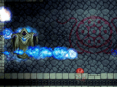
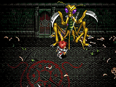
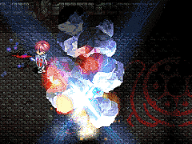
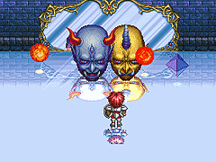
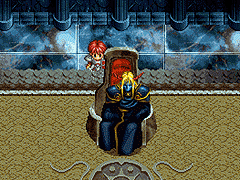

ジェノクレス(Jenocres)

ニグティルガー(Nygtilger)

ヴァジュリオン(Vagulion)

ピクティモス(Pictimos)

コンスクラード(Khonsclard)

ヨグレクス & オムルガン(Yogleks & Omulgun)

ダルク＝ファクト(Dalk=Fukt)

目次 > ゲームについて > 日本Falcom 攻略 > Ys > ボス戦
らんの眼
Ys(イース) Ys Eternal(VE)/Ys Complete
| 概要 | 情報 | ボス戦 |
| 敵キャラ一覧 | アイテム一覧 | 攻略チャート |
| 地図 | ダウンロード | イースの本 |
| 経験値表 | 地名一覧 | タイムアタック |
| ETERNAL / Complete 比較 | キャラクター一覧 | |
| Ys 攻略へ | 目次へ戻る |
| 概要 | 情報 | ボス戦 |
| 敵キャラ一覧 | アイテム一覧 | 攻略チャート |
| 地図 | ダウンロード | イースの本 |
| 経験値表 | 地名一覧 | タイムアタック |
| ETERNAL / Complete 比較 | キャラクター一覧 | |
| ページ上部へ | Ys 攻略へ | 目次へ戻る |